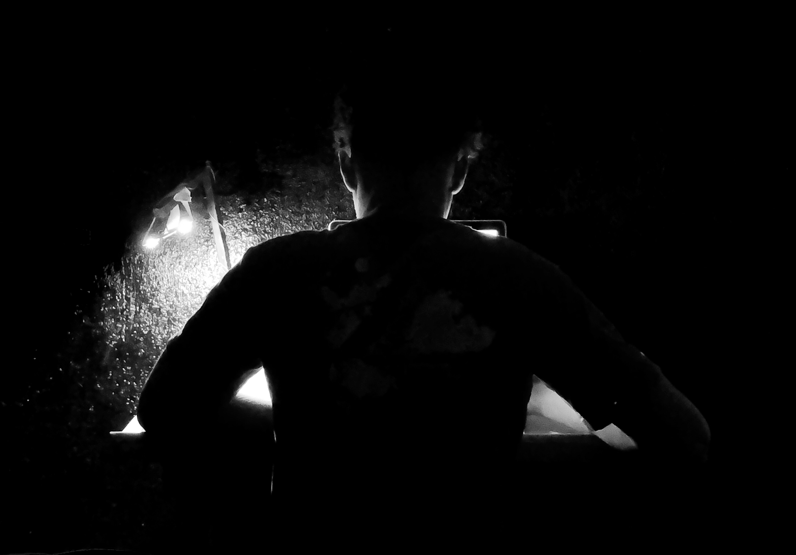
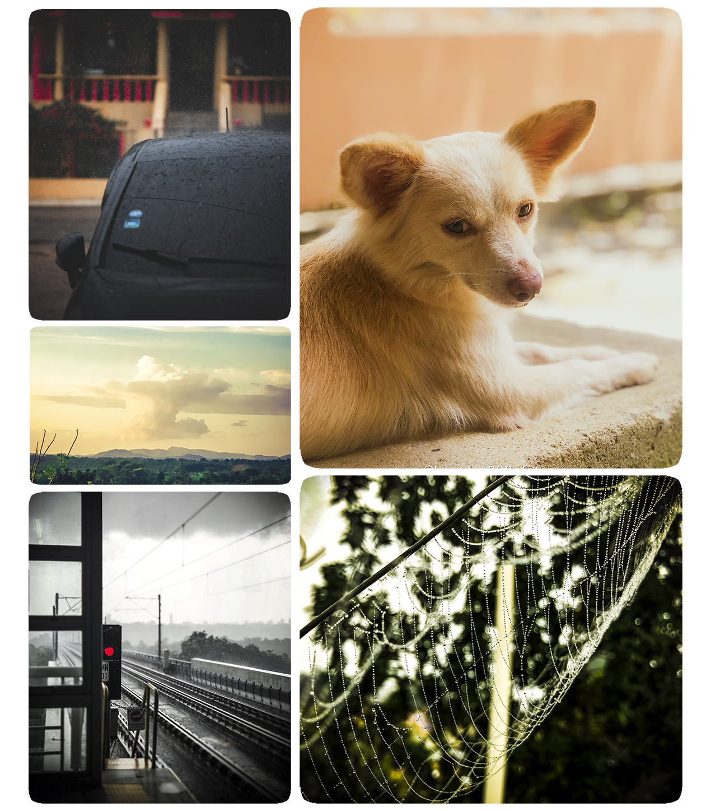
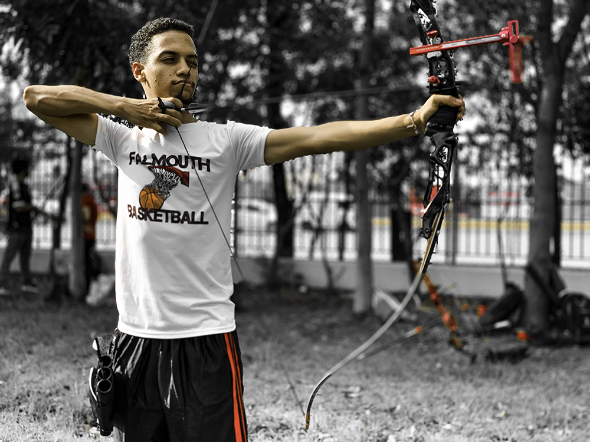

Bueno, esta vez no me enfocaré en la historia detrás de lo que hago, sino los porqués de estos. Empezamos con mi pasatiempo más antiguo, y ya que es hasta talento, el cual es dibujar. Desde que tengp 12, se despertó en mi ese sentimiento de gastar horas y horas enfocado en eso. Dedicaba cuadernos completos a solo el hecho de copiar cartoons. Empezó como un simple deseo de hacerle ver a mis compañeros de primaria que yo podía hacerlo mejor que ellos. Hoy en día sabemos por certeza que es cierto.
Los cientificos lo llaman "La zona", y wikipedía lo define de este modo: La zona (o El FLujo) es el estado mental operativo en el cual una persona está completamente inmersa en la actividad que ejecuta. Se caracteriza por un sentimiento de enfocar la energía, de total implicación con la tarea, y de éxito en la realización de la actividad.
Bueno, eso es exactamente lo que se siente que te de calambres en la misma posición. Me encantaría dar más explicación pero no podría porque, aparte que no es un estado consciente como para tratar de explicarlo, solo podrás entenderlo cuando encuentres eso que te haga olvidarte del mundo por un instante. Desconectarte.
[yo dibujando en el 2019, el cual considero mi año de mayor crecimiento artístico]
A partir de ahí mis pasatiempos se extendierón al la fotografía casual. No estoy enteramente adentrado en fotografiar edificios, pero si veo uno en buena perspectiva, trataría, sin duda, de sacar mi celular y hacerle una buena toma y aguardarla para mi mismo. Un día de lluvia, un amanecer o atardecer, una linda nube, hasta un simple perro. Si es uno de esos momentos que merecen durar para siempre, ¿quien soy yo para no darle lo que se merece?
[Solo unpar de fotos ocacionales]
Por último, y no menos importante, mi pasatiempo es el deporte, arquería específicamente. Desde que era niño estuve interesado en la materia. Supongo que siempre supe que no sería muy musculoso y, por tanto, tanto mi deporte como mi carrera, al igual que los dos pasatiempos anteriores, son más lógicos y de técnica que de fuerza física. Me gusta así.
Al entrar a la universidad noté que se impartía como deporte, a lo que me decidí a tomarlo como deporte obligatorio de la carrera. Justo después de iniciar la universidad explota la pantemia del 2022, entonces tuve que esperar a que la volvieran a impartir presencial en mayo del 2021. Luego de eso se nos presentó la opción de entrar al equipo universitario de la universidad. Un par de mis compañeros y yo accedimos, desde entonces estamos practicándolo como si vivieramos de ello y así esperamos que sea algún día. Se me dió la oprtunidad de ganar medallas y conocer a personas asombrosas allí, incluyendo a nuestros nos entrenadores, Adrienne y Daniel. aún sigo en le área y prácticando con la mira puesta en la luna.
[Foto ella para la página de arquería de @Unapec_Archery]
Hasta este punto ya me conoces bastante. Se dice que "eres tus hábitos" y aquí están un par de los que me definen. Gracias por leer hasta aquí y no te quedes sin dar un saludo en los enlaces de abajo.